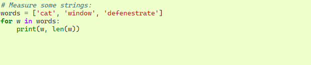
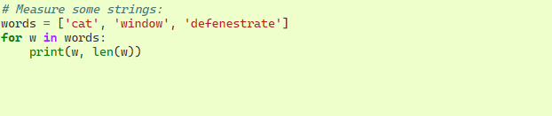
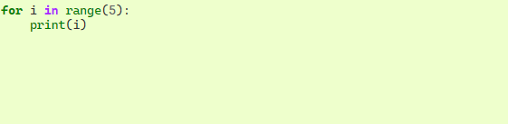
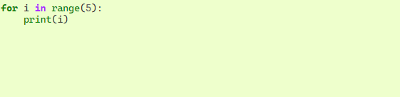
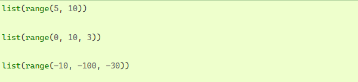
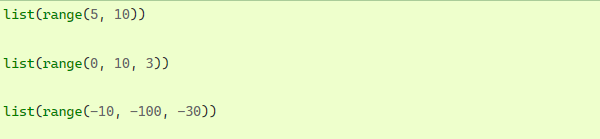

Talvez o tipo de instrução mais conhecido seja a ifinstrução. Por exemplo:


Pode haver zero ou mais elifpartes, e a elseparte é opcional. A palavra-chave ' elif' é a abreviação de 'else if' e é útil para evitar recuo excessivo. Uma sequência if… elif… … é um substituto para as instruções or encontradas em outros idiomas.elifswitchcase
Se você estiver comparando o mesmo valor com várias constantes ou verificando tipos ou atributos específicos, também poderá achar a matchinstrução útil. Para obter mais detalhes, consulte declarações de correspondência .
A forinstrução em Python difere um pouco do que você pode estar acostumado em C ou Pascal. Em vez de sempre iterar sobre uma progressão aritmética de números (como em Pascal), ou dar ao usuário a capacidade de definir tanto a etapa de iteração quanto a condição de parada (como C), a instrução do Python itera sobre os itens de qualquer sequência (uma lista ou forum string), na ordem em que aparecem na sequência. Por exemplo (sem trocadilhos):
 

O código que modifica uma coleção durante a iteração na mesma coleção pode ser difícil de acertar. Em vez disso, geralmente é mais direto fazer um loop sobre uma cópia da coleção ou criar uma nova coleção:

Se você precisar repetir uma sequência de números, a função interna range()será útil. Gera progressões aritméticas:
 

O ponto final fornecido nunca faz parte da sequência gerada; range(10)gera 10 valores, os índices legais para itens de uma sequência de comprimento 10. É possível deixar o intervalo começar em outro número ou especificar um incremento diferente (mesmo negativo; às vezes isso é chamado de 'etapa'):

Para iterar sobre os índices de uma sequência, você pode combinar range()e len()da seguinte forma:
 

Na maioria desses casos, no entanto, é conveniente usar a enumerate() função, consulte Técnicas de Looping .
Uma coisa estranha acontece se você apenas imprimir um intervalo:

De muitas maneiras, o objeto retornado por range()se comporta como se fosse uma lista, mas na verdade não é. É um objeto que retorna os itens sucessivos da sequência desejada quando você itera sobre ele, mas não faz parte da lista, economizando espaço.
Dizemos que tal objeto é iterável , ou seja, adequado como alvo para funções e construções que esperam algo do qual possam obter itens sucessivos até que o suprimento se esgote. Vimos que a forinstrução é tal construção, enquanto um exemplo de uma função que recebe um iterável é sum():

Mais tarde veremos mais funções que retornam iteráveis e recebem iteráveis como argumentos. No capítulo Estruturas de Dados , trataremos com mais detalhes sobre list().
A breakinstrução, como em C, sai do fechamento forou whileloop mais interno.
As instruções de loop podem ter uma elsecláusula; ele é executado quando o loop termina por exaustão do iterável (com for) ou quando a condição se torna falsa (com while), mas não quando o loop é finalizado por uma breakinstrução. Isso é exemplificado pelo seguinte loop, que procura por números primos:

(Sim, este é o código correto. Observe atentamente: a elsecláusula pertence ao forloop, não à ifinstrução.)
Quando usada com um loop, a elsecláusula tem mais em comum com a elsecláusula de uma tryinstrução do que com a das ifinstruções: a cláusula tryde uma instrução elseé executada quando nenhuma exceção ocorre e a elsecláusula de um loop é executada quando não break ocorre. Para saber mais sobre a tryinstrução e as exceções, consulte Manipulando exceções .
A continueinstrução, também emprestada de C, continua com a próxima iteração do loop:

A passdeclaração não faz nada. Pode ser usado quando uma instrução é necessária sintaticamente, mas o programa não requer nenhuma ação. Por exemplo:

Isso é comumente usado para criar classes mínimas:

Outro lugar passque pode ser usado é como um espaço reservado para uma função ou corpo condicional quando você está trabalhando em um novo código, permitindo que você continue pensando em um nível mais abstrato. O passé silenciosamente ignorado:

Uma matchinstrução pega uma expressão e compara seu valor a padrões sucessivos fornecidos como um ou mais blocos de caso. Isso é superficialmente semelhante a uma instrução switch em C, Java ou JavaScript (e em muitas outras linguagens), mas é mais semelhante à correspondência de padrões em linguagens como Rust ou Haskell. Somente o primeiro padrão correspondente é executado e também pode extrair componentes (elementos de sequência ou atributos de objeto) do valor em variáveis.
A forma mais simples compara um valor de assunto com um ou mais literais:

Observe o último bloco: o “nome da variável” _atua como um curinga e nunca deixa de corresponder. Se nenhum caso corresponder, nenhuma das ramificações será executada.
Você pode combinar vários literais em um único padrão usando |(“or”):

Os padrões podem parecer atribuições de desempacotamento e podem ser usados para vincular variáveis:

Estude esse cuidadosamente! O primeiro padrão tem dois literais e pode ser pensado como uma extensão do padrão literal mostrado acima. Mas os próximos dois padrões combinam um literal e uma variável, e a variável vincula um valor do sujeito ( point). O quarto padrão captura dois valores, o que o torna conceitualmente semelhante à atribuição de descompactação .(x, y) = point
Se você estiver usando classes para estruturar seus dados, poderá usar o nome da classe seguido por uma lista de argumentos semelhante a um construtor, mas com a capacidade de capturar atributos em variáveis:

Você pode usar parâmetros posicionais com algumas classes internas que fornecem uma ordem para seus atributos (por exemplo, dataclasses).
Você também pode definir uma posição específica para atributos em padrões configurando o __match_args__atributo especial em suas classes.
Se for definido como (“x”, “y”), os seguintes padrões são todos equivalentes (e todos vinculam o yatributo à varvariável):

Uma maneira recomendada de ler padrões é vê-los como uma forma estendida do que você colocaria à esquerda de uma atribuição, para entender quais variáveis seriam definidas para quê. Somente os nomes autônomos (como varacima) são atribuídos por uma instrução de correspondência. Nomes pontilhados (como foo.bar), nomes de atributo (o x=e y=acima) ou nomes de classe (reconhecidos pelo “(…)” ao lado deles, como Pointacima) nunca são atribuídos.
Os padrões podem ser aninhados arbitrariamente. Por exemplo, se tivermos uma pequena lista de pontos, podemos combiná-la assim:

Podemos adicionar uma ifcláusula a um padrão, conhecido como “guarda”. Se a guarda for falsa, matchsegue para tentar o próximo bloco de caso. Observe que a captura de valor ocorre antes que a guarda seja avaliada:

Vários outros recursos importantes desta declaração:
- Assim como as atribuições de descompactação, os padrões de tupla e lista têm exatamente o mesmo significado e, na verdade, correspondem a sequências arbitrárias. Uma exceção importante é que eles não correspondem a iteradores ou strings.
- Os padrões de sequência suportam a descompactação estendida: e funcionam de maneira semelhante às atribuições de desempacotamento. O nome depois também pode ser , portanto, corresponde a uma sequência de pelo menos dois itens sem vincular os itens restantes.[x, y, *rest](x, y, *rest)*_(x, y, *_)
- Padrões de mapeamento: captura os valores e de um dicionário. Ao contrário dos padrões de sequência, as chaves extras são ignoradas. Um tipo de descompactação também é suportado. (Mas seria redundante, por isso não é permitido.){"bandwidth": b, "latency": l}"bandwidth""latency"**rest**_
- Os subpadrões podem ser capturados usando a aspalavra-chave:
- Os padrões podem usar constantes nomeadas. Estes devem ser nomes pontilhados para evitar que sejam interpretados como variável de captura:

irá capturar o segundo elemento da entrada como p2(contanto que a entrada seja uma sequência de dois pontos)
A maioria dos literais é comparada por igualdade, porém os singletons Truesão Falsecomparados Nonepor identidade.
Para uma explicação mais detalhada e exemplos adicionais, você pode consultar PEP 636 que é escrito em formato de tutorial.
Podemos criar uma função que escreve a série de Fibonacci em um limite arbitrário:

Uma definição de função associa o nome da função ao objeto de função na tabela de símbolos atual. O interpretador reconhece o objeto apontado por esse nome como uma função definida pelo usuário. Outros nomes também podem apontar para o mesmo objeto de função e também podem ser usados para acessar a função:

Vindo de outras linguagens, você pode objetar que fibnão é uma função, mas um procedimento, pois não retorna um valor. Na verdade, mesmo as funções sem uma returninstrução retornam um valor, embora um valor bastante chato. Esse valor é chamado None(é um nome interno). A gravação do valor Noneé normalmente suprimida pelo interpretador se for o único valor gravado. Você pode vê-lo se realmente quiser usar print():

É simples escrever uma função que retorne uma lista dos números da série de Fibonacci, ao invés de imprimi-la:

Este exemplo, como sempre, demonstra alguns novos recursos do Python:
- A returninstrução retorna com um valor de uma função. returnsem uma expressão, o argumento retorna None. Cair no final de uma função também retorna None.
- A instrução result.append(a)chama um método do objeto de lista result. Um método é uma função que 'pertence' a um objeto e é chamada obj.methodname, onde objé algum objeto (pode ser uma expressão), e methodnameé o nome de um método que é definido pelo tipo do objeto.
- Tipos diferentes definem métodos diferentes. Métodos de tipos diferentes podem ter o mesmo nome sem causar ambiguidade. (É possível definir seus próprios tipos e métodos de objeto, usando classes , veja Classes ) O método append()mostrado no exemplo é definido para objetos de lista; adiciona um novo elemento no final da lista. Neste exemplo, é equivalente a , mas mais eficiente.result = result + [a]
Também é possível definir funções com um número variável de argumentos. Existem três formas, que podem ser combinadas.
A forma mais útil é especificar um valor padrão para um ou mais argumentos. Isso cria uma função que pode ser chamada com menos argumentos do que foi definido para permitir. Por exemplo:

Esta função pode ser chamada de várias maneiras:
- dando apenas o argumento obrigatório: ask_ok('Do you really want to quit?')
- dando um dos argumentos opcionais: ask_ok('OK to overwrite the file?', 2)
- ou mesmo dando todos os argumentos: ask_ok('OK to overwrite the file?', 2, 'Come on, only yes or no!')
Este exemplo também apresenta a inpalavra-chave. Isso testa se uma sequência contém ou não um determinado valor.
Os valores padrão são avaliados no ponto de definição da função no escopo de definição , de modo que

Agora que você está prestes a escrever partes mais longas e complexas do Python, é um bom momento para falar sobre estilo de codificação . A maioria das linguagens pode ser escrita (ou mais concisa, formatada ) em diferentes estilos; alguns são mais legíveis do que outros. Tornar mais fácil para os outros lerem seu código é sempre uma boa ideia, e adotar um bom estilo de codificação ajuda tremendamente nisso.
Para Python,O PEP 8 emergiu como o guia de estilo ao qual a maioria dos projetos adere; promove um estilo de codificação muito legível e agradável aos olhos. Todo desenvolvedor Python deve lê-lo em algum momento; aqui estão os pontos mais importantes extraídos para você:
- Use recuo de 4 espaços e sem tabulações.
- Quebre as linhas para que não excedam 79 caracteres.
- Use linhas em branco para separar funções e classes e blocos maiores de código dentro das funções.
- Quando possível, coloque comentários em uma linha própria.
- Use docstrings.
- Use espaços ao redor dos operadores e após as vírgulas, mas não diretamente dentro das construções de colchetes: .a = f(1, 2) + g(3, 4)
- Nomeie suas classes e funções de forma consistente; a convenção é usar UpperCamelCasepara classes e lowercase_with_underscorespara funções e métodos. Sempre use selfcomo nome para o primeiro argumento do método (consulte Uma primeira olhada nas classes para saber mais sobre classes e métodos).
- Não use codificações sofisticadas se seu código for usado em ambientes internacionais. O padrão do Python, UTF-8 ou até mesmo ASCII simples funcionam melhor em qualquer caso.
- Da mesma forma, não use caracteres não ASCII em identificadores se houver a menor chance de pessoas falando um idioma diferente lerem ou manterem o código.
4 espaços são um bom compromisso entre recuo pequeno (permite maior profundidade de aninhamento) e recuo grande (mais fácil de ler). As guias introduzem confusão e é melhor deixá-las de fora.
Isso ajuda os usuários com telas pequenas e torna possível ter vários arquivos de código lado a lado em telas maiores.